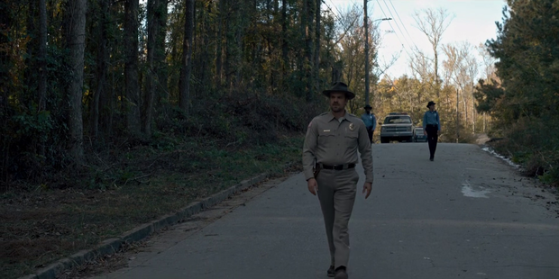

{{ subhead }}
{{ snippetQuote }}
{{ quoteText }}
{{ quoteAuthor }}
Intersection of Cornwallis and Kerley
| Title | Ratings |
|---|---|
| Chapter One: The Vanishing of Will Byers | 8.6 |
| Chapter Two: The Weirdo on Maple Street | 8.5 |
| Chapter Three: Holly, Jolly | 8.9 |
| Chapter Four: The Body | 8.9 |
| Chapter Five: The Flea and the Acrobat | 8.7 |
| Chapter Six: The Monster | 8.8 |
| Chapter Seven: The Bathtub | 9.1 |
| Chapter Eight: The Upside Down | 9.3 |
| Title | Ratings |
|---|---|
| Chapter One: MADMAX | 8.4 |
| Chapter Two: Trick or Treat, Freak | 8.5 |
| Chapter Three: The Pollywog | 8.7 |
| Chapter Four: Will the Wise | 8.7 |
| Chapter Five: Dig Dug | 8.9 |
| Chapter Six: The Spy | 9.2 |
| Chapter Seven: The Lost Sister | 6.1 |
| Chapter Eight: The Mind Flayer | 9.3 |
| Chapter Nine: The Gate | 9.4 |